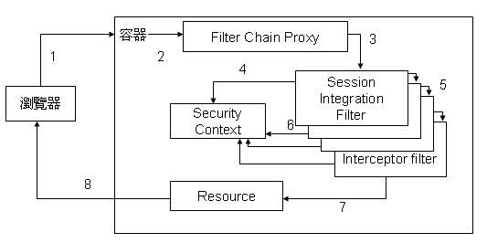

下圖為Acegi的架構流程簡圖：

- 瀏覽器發出請求。
- 容器將請求包裝為請求物件與回應物件，然後呼叫Acegi的Filter Chain Proxy，將請求物件與回應物件傳遞給它。
- Filter Chain Proxy呼叫Filter Chain的第一個Filter，通常是Session Integration Filter，將請求物件與回應物件傳遞給它。
- Session Integration Filter檢查Session物件是否存在，並且包括Security
Context物件，如果否則建立Security Context物件並將之放入security context
holder之中，一個存在於application scope的物件。
- 每個Filter完成後會呼叫下一個Filter。
- 每個Filter會讀取或變更Security Context，每個Filter處理完成之後，最後控制權再度回到Session Integration Filter後，Session Integration Filter檢查Security Context是否有變更，如果有變更，使用Security Context中的資訊更新Session物件。
- 完成Filter Chain，控制權進入應用程式，開始處理請求並準備回應。
- 將結果回應傳回至瀏覽器。